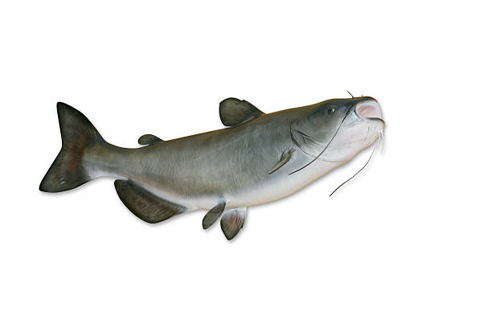

Popularity
The channel catfish is neither federally listed nor imperiled. Channel catfish are a popular recreational fish and are
managed by state recreational fishing regulations through creel and size limits.
Channel catfish, when introduced to non‐native waters, can negatively impact indigenous fish species because they are
such opportunistic feeders. They may eventually outcompete native fishes for habitat and food.
Natural History
Male channel catfish turn dark during spawning season and develop a thick pad on the top of their heads. Female channel
catfish require cool water and short day lengths during the winter months for proper egg development. Channel catfish
spawn, depending on the latitude, during the months of April through July, when temperatures reach 27 or 28 degrees Celsius (80‐82 degrees Fahrenheit).
The spawning catfish pair will dig a depression on the bottom of the river or stream, or find a suitable sub-surface cavity to
deposit their eggs, which is then guarded by the male catfish. Egg incubation will last between 3 to 8 days, depending on the
water temperature. Channel catfish larvae will take 12 to 16 days to develop.
Range
The range of Channel catfish extends from southern Canada into northern Mexico.
They are found within the central drainages of the United States.
Habitat
Adult channel catfish inhabit rivers and streams. They prefer clean, well
oxygenated waters, but can also live in ponds and reservoirs.
Diet
Channel catfish feed primarily on small fish, crustaceans (crayfish), clams and
snails, aquatic insects and small mammals. There are even reports of channel catfish eating small birds.